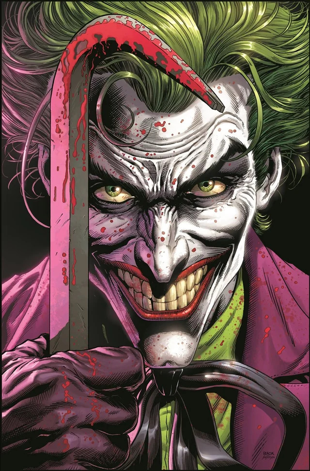
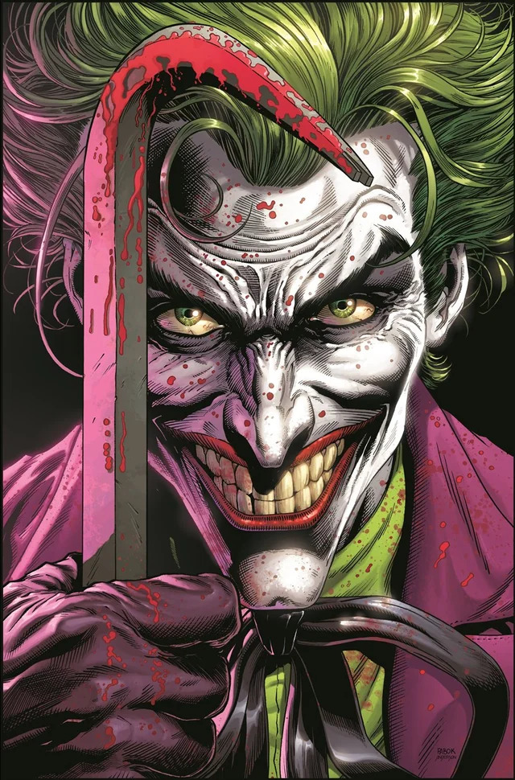

Batman spotted in Stockholm
Batman has been spotted in Gamla Stan stopping criminals trying to smuggle in drugs, weapons and also human trafficking.
Read more about it hereBatman has been spotted in Gamla Stan stopping criminals trying to smuggle in drugs, weapons and also human trafficking.
Read more about it hereRed hood spotted in Rinkeby violently stopping criminals doing drug deals, there are about 30 people dead from gunshot wounds.
Read more about it hereRobin spotted in Gamla Stan with Batman, he seems to have had some sort of mental breakdown which made him lash out in anger, there are about 50 people dead from fatal wounds from a bladed weapon.
Read more about it here 

Joker has been spotted at Avicii Arena, holding 10.000 people hostage whilst holding a theatrical and horrific performance trying to lure out Batman to him.
Read more about it here